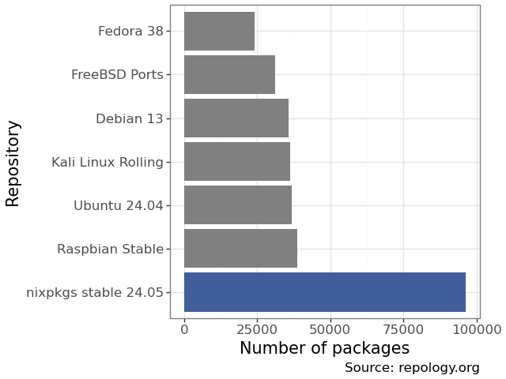

Nix
Nix
or how to stop worrying and learn to love managed dependency hell
Motivation
"I don’t care what OS you use, if you install Nix on it, I can guarantee that everything you ever need in this project Just Works, without you having to lift a finger." - Jacek Generowicz
What nix gives you
- Reproducible software environments for all languages.
- Instant access to 107k packages.
- Declarative
- machines
- containers
- VMs
- ISO- & SD-images.
Repository sizes

The grand idea
- Software dependencies are a D.A.G.
- You can name the nodes by their inputs
- This allows you to have multiple versions of everything
The Purely Functional Software Deployment Model - Eelco Dolstra, 2006, PhD Thesis

Nixlang
let
pkgs = import <nixpkgs> {};
in
pkgs.stdenv.mkDerivation rec {
pname = "hello";
version = "2.12.1";
src = pkgs.fetchurl {
url = "mirror://gnu/hello/hello-${version}.tar.gz";
sha256 = "sha256-jZkUKv2SV28wsM18tCqNxoCZmLxdYH2Idh9RLibH2yA=";
};
}

/nix/store/jdgbv5g79avnrx5bdi59jq9ibbxycq8x-hello-2.12.1
Derivation
{
"/nix/store/jgikc5sz2ivyi82mn679183a1fjms4ha-hello-2.12.1.drv": {
"args": [
"-e",
"/nix/store/v6x3cs394jgqfbi0a42pam708flxaphh-default-builder.sh"
],
"builder": "/nix/store/5jw69mbaj5dg4l2bj58acg3gxywfszpj-bash-5.2p26/bin/bash",
"env": {
"__structuredAttrs": "",
"buildInputs": "",
"builder": "/nix/store/5jw69mbaj5dg4l2bj58acg3gxywfszpj-bash-5.2p26/bin/bash",
"cmakeFlags": "",
"configureFlags": "",
"depsBuildBuild": "",
"depsBuildBuildPropagated": "",
"depsBuildTarget": "",
"depsBuildTargetPropagated": "",
"depsHostHost": "",
"depsHostHostPropagated": "",
"depsTargetTarget": "",
"depsTargetTargetPropagated": "",
"doCheck": "",
"doInstallCheck": "",
"mesonFlags": "",
"name": "hello-2.12.1",
"nativeBuildInputs": "",
"out": "/nix/store/jdgbv5g79avnrx5bdi59jq9ibbxycq8x-hello-2.12.1",
"outputs": "out",
"patches": "",
"pname": "hello",
"propagatedBuildInputs": "",
"propagatedNativeBuildInputs": "",
"src": "/nix/store/pa10z4ngm0g83kx9mssrqzz30s84vq7k-hello-2.12.1.tar.gz",
"stdenv": "/nix/store/dd7nxjnni7nzm0846fq5xrm89ais5lwz-stdenv-linux",
"strictDeps": "",
"system": "x86_64-linux",
"version": "2.12.1"
},
"inputDrvs": {
"/nix/store/0s62n3lv2bca7w4ik17dqnsmnfqi53lk-stdenv-linux.drv": {
"dynamicOutputs": {},
"outputs": [
"out"
]
},
"/nix/store/5rydfkrpd5vdpz4qxsypivxwy9y6z8gl-bash-5.2p26.drv": {
"dynamicOutputs": {},
"outputs": [
"out"
]
},
"/nix/store/r9p6f6j2mdzhpp5jgxcxmk83pp71pv89-hello-2.12.1.tar.gz.drv": {
"dynamicOutputs": {},
"outputs": [
"out"
]
}
},
"inputSrcs": [
"/nix/store/v6x3cs394jgqfbi0a42pam708flxaphh-default-builder.sh"
],
"name": "hello-2.12.1",
"outputs": {
"out": {
"path": "/nix/store/jdgbv5g79avnrx5bdi59jq9ibbxycq8x-hello-2.12.1"
}
},
"system": "x86_64-linux"
}
}
Sandboxed build - nixcpp
- Defined environment
- Only sees the input paths
- Happens in $TMP
- No network access (except Fixed Output Derivations
- Protected store

/nix/store/978ipm5g2x1g0zc1697yr9ags9s10y8f-hello-2.12.1
vs
/nix/store/978ipm5g2x1g0zc1697yr9ags9s10y8f-hello-2.12.1
=> Nixpkgs
Nixpkgs
- 107k packages
- ~3500 maintainers
- Managed on github: 650.000 commits
- One version(-ish) of everything per release
- released twice a year
Flakes
- Idea: Treat the nixlang specifications as nodes that 'build' derivations
- Tie multiple of the together via git and lock files
- Idea: 'Override' the arguments to functions
- => Outcome -> composable, reusable, reproducible specification
{
inputs = {
nixpkgs.url = "github:nixos/nixpkgs/24.05";
old_nixpkgs.url = "github:nixos/nixpkgs/21.05";
};
outputs = { self, nixpkgs, old_nixpkgs,
}: let
pkgs = import nixpkgs {system = "x86_64-linux";};
old_pkgs = import old_nixpkgs {system = "x86_64-linux";};
in {
packages.x86_64-linux.default = pkgs.runCommand "default" {} ''
mkdir $out
ln ${pkgs.hello}/bin/hello $out/hello -s
ln ${old_pkgs.hello}/bin/hello $out/hello_old -s
'';
};
}

Nixos
- Idea: Configuration = attrsets
- Declarative Module system in nixlang
- Outcome: NixOs
- Linux distribution
- Runs from two symlinks (/etc & /run/current-system/sw/bin)
- 'infinite' roll-back
- Ephemeral systems
- Can also build containers, VMs, ISOs, SD-images
Better Containers
Containment: Share /nix/store with host.Shipping: Build not in layers, but from DAG.
NixR
- Ecosystem-date based versioning
- Plus your overrides
- Almost all CRAN & Bioconductor packages
poetry2nix
- 'Poetry' lock file based
- essentially all of PyPi